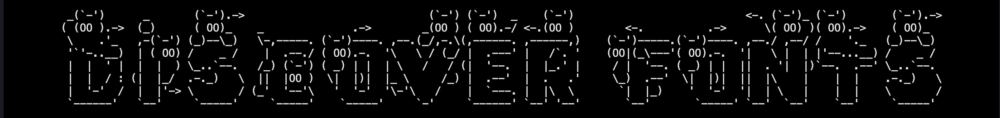

Create and use fonts
Introduction
This article will guide you through the process of creating your own font using the Font enum.
ANSI_Shadow
 Lil_Devil
Merlin
Prerequisites
- .NET framework 6 or later
- ConsoleAppVisuals library: 3.0.0 or later
- Having looked at the project from the Introduction section
Setup workspace
We will take the example project of the Introduction section.
As a reminder, here is the file structure of the project:
Example_project <-- root
└───MyApp
├───bin
├───MyApp.csproj
└───Program.cs
What are fonts
In ConsoleAppVisuals, a font is a collection of ASCII characters on multiple lines associated to keys (e.g. abc123?!/). Some fonts are already available in the Font enum like the ANSI_Shadow, Bulbhead, Lil_Devil accessible using: Font.ANSI_Shadow, Font.Bulbhead, Font.Lil_Devil.
Fonts are not available to all elements, for example, find it in the Title element:
Title title = new Title("Example project", 1, TextAlignment.Center, Font.ANSI_Shadow);
To use a custom font, update the font variable and add the font path:
Title title = new Title("Example project", 1, TextAlignment.Center, Font.Custom, "path/to/font");
Caution
In elements that use fonts:
- If you use built-in fonts, you MUST NOT specify a font path.
- If you use a custom font, you MUST specify a font path.
Here is a recap of fonts work:
flowchart LR
A[ASCII files] -->|Parsed into| B[Font]
C[config file] -->|Parsed into| B
D[Element: Title] -->|1.Input a string| B
B -->|2.Return styled text| D
D -->|Render on| E[Console]
Creating a font
Structure
Here is briefly the structure of a font for the ANSI_Shadow font:
ANSI_Shadow
├───data
│ ├───alphabet.txt
│ ├───numbers.txt
│ └───symbols.txt
└───config.yml
Config file
The config.yml is the config file of the font. It contains the name, the author, the height of the characters and all the supported ones. Find an example below for the ANSI_Shadow font:
name: ANSI Shadow
author: Unknown
height: 6
chars:
alphabet: ABCDEFGHIJKLMNOPQRSTUVWXYZabcdefghijklmnopqrstuvwxyz
numbers: 0123456789
symbols: '?!:.,;/-_()[]%$^*@ '
Note
Pay attention to the alphabet as the fonts are case-sensitive. In the alphabet category, mind to include both the upper and lower case letters. If your font does not support both, just copy and paste the letters twice. ANSI_Shadow font is a good example. Find it here
Here, name, author, height and chars are required. They must not be null or empty. If the author is unknown, you can put Unknown by convention.
In contrast, the alphabet, numbers and symbols are optional. If you don't have a specific category, you can let it empty and not include the ASCII file associated.
An example of empty numbers:
name: Bloody
author: Unknown
height: 10
chars:
alphabet: ABCDEFGHIJKLMNOPQRSTUVWXYZabcdefghijklmnopqrstuvwxyz
numbers:
symbols: ' '
Note
It is highly recommended to have a ' ' (space) char in the symbols category for a readable font.
By convention, the À, é, ü... should be included in the symbols category.
ASCII files
The ASCII files are the representation of the characters in the font. They are stored in the data folder. The name of the file must be the category name (e.g. alphabet.txt, numbers.txt, symbols.txt).
Here is an example of the alphabet.txt file for the ANSI_Shadow font:
██████╗ @
╚════██╗ @
▄███╔╝ @
▀▀══╝ @
██╗ @
╚═╝ @@
██╗ @
██║ @
██║ @
╚═╝ @
██╗ @
╚═╝ @@
@
██╗ @
╚═╝ @
██╗ @
╚═╝ @
@@
As you noticed:
- All characters are 6 lines high as specified in the config file.
- Each line ends with a
@. - The final line of a character ends with a
@@. - The width of the characters is not fixed. It can be different from one character to another.
- The
@characters are aligned for a given character. - One space is added between the characters and the
@to make the result styled text more readable. - DO NOT USE
@CHAR IN YOUR FONT ITSELF.
Points 1, 2, 3 are mandatory and will throw an exception if not respected. Points 4, 5, 6, 7 are optional but recommended for a better result.
Note
The characters are ordered following the order given by the chars categories in the config file.
Using your font
If you followed the previous steps rigorously, you should have a font ready to use. Consider the following project:
Example_project <-- root
└───MyApp
├───ANSI_Shadow
│ ├───data
│ │ ├───alphabet.txt
│ │ ├───numbers.txt
│ │ └───symbols.txt
│ └───config.yml
├───bin
├───MyApp.csproj
└───Program.cs
Warning
Do not forget to add at the beginning of your Program.cs file the following using statements:
using ConsoleAppVisuals;
using ConsoleAppVisuals.PassiveElements;
using ConsoleAppVisuals.InteractiveElements;
using ConsoleAppVisuals.Enums;
using ConsoleAppVisuals.Models;
To check that ANSI_Shadow is working, update the Program.cs file:
Title title = new Title("Example project", 1, TextAlignment.Center, Font.Custom, "../ANSI_Shadow/");
The path here leads to the font directory. The library will automatically target or the config.yml file and the data folder.
If no error was thrown, that means that the font is working. You can now use it. Here is how to manipulate the styler:
Creation:
TextStyler styler = new TextStyler(Font.Custom, "ANSI_Shadow/");
Usage (String -> Styled text):
string[] styledText = styler.Style("Hello, world!");
Display:
Core.WritePositionedStyledText(styledText);
For more information about the TextStyler class and WritePositionedStyledText() method, please refer to the References section.
Contributing
If you want to contribute to the library by adding a font, you can do so by creating a pull request on the GitHub repository.
Here are the steps to follow:
- Fork the repository and create a new branch for your new font.
- Add your font to the
src/ConsoleAppVisuals/fontsdirectory. - Make sure to match all the requirements for the font defined above in the article.
- Add your font name to the
Fontenum (src/ConsoleAppVisuals/enums/Font.cs) and precise the author and the height of the characters in the metadata comments. - Submit a pull request to the dev branch of the repository.
After these steps, your font will be reviewed and merged into the library to be available for everyone.
Resources
Have a question, give a feedback or found a bug? Feel free to open an issue or start a discussion on the GitHub repository.